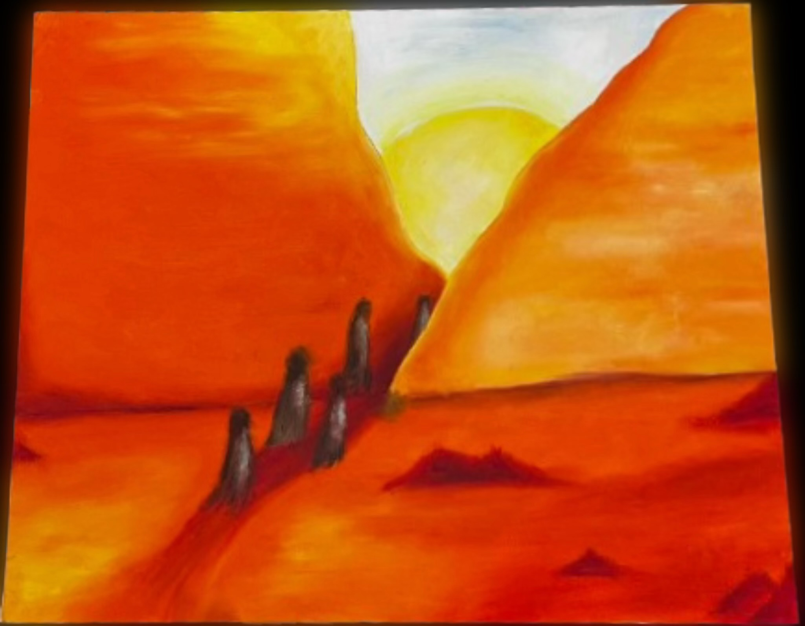
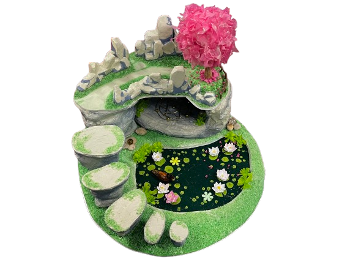

The presentation of how it feels like to be in a 90s like mars film.
- Neveah Armstrong
Endless Dreams

This Painting is meant to express wonder, a longing for exploration of the unknown and the infinite possibilities the world has to offer. It should awaken a feeling of admiration for the natural world and inspire the viewer.
- Jade Jiang
Acrylic Paint 11 x 24
misc. lot

The wanderlust of one doesn't come from the places one ends up so much as the people in them.
- Peter Snowden
Lino print (ink) 9 x 12
Cat & Mouse

Landscape based on the ideas of how Dr. Seuss has the unnatural percieved as reality with 5 different Mountain Views. This percieves the elasticity and wandering of the mind in the different paths of imagination that it strolls through.
- Colyn Giron
Oil & Acrylic Paint 28 x 48
Pack Yr Romantic Mind

This piece was kind of just an exploration of my own creativty. I wanted to slap some colors down and draw up whatever came up to mind. I think it really makes your eyes wander.
- Ali Garner
Watercolor & Pen 16 x 20
Lost in Thought

A visual take on the beauty of a mind lost in thought while wondering through unseen landscapes.
- Jackie Mize
Colored Pencil 13 x 13
No-man's-land
Following the theme wander, this piece is meant to bring a sense of self wandering in an open abyss of sand dunes. Setting placed in the Arabic desert, where wandering spirits reside, wandering into the sun.
- Maddy Barnes
Oil Paint 18 x 24
The Escape from Hell

This piece connects to the theme 'wander' by showing the journey taken by orpheus and eurydice between two worlds, the over-world and the underworld, in which orpheus wanders far to bring his beloved wife from the dead.
- Ada Snowden
Grapite 9 x 12
Collecting Dust
 Background Removed 2.png)
This piece symbolizes the intellectual and existential journey of self discover, with the desk representing reflection and the skull reminding us of mortality. The light suggests moments of insight or clarity amidst the darkness of uncertainty. The piece connects to the theme of 'wander' by illustrating how our search for meaning is intertwined with an awareness of life's fleeting nature.
- Tre Cathey
Oil Pastel 16 x 20
I Wonder Why I Wander
 Background Removed 2.png)
- Bryant Price

This piece depicts a journey through an unknown, magical landscape. Its winding steps, tranquil pond, and glowing cave invites the viewers to let their eyes - wander - and exploer its enchanting features.
- Nicole Yang
Art
Is
The
Compass
For
A
Wandering
Soul